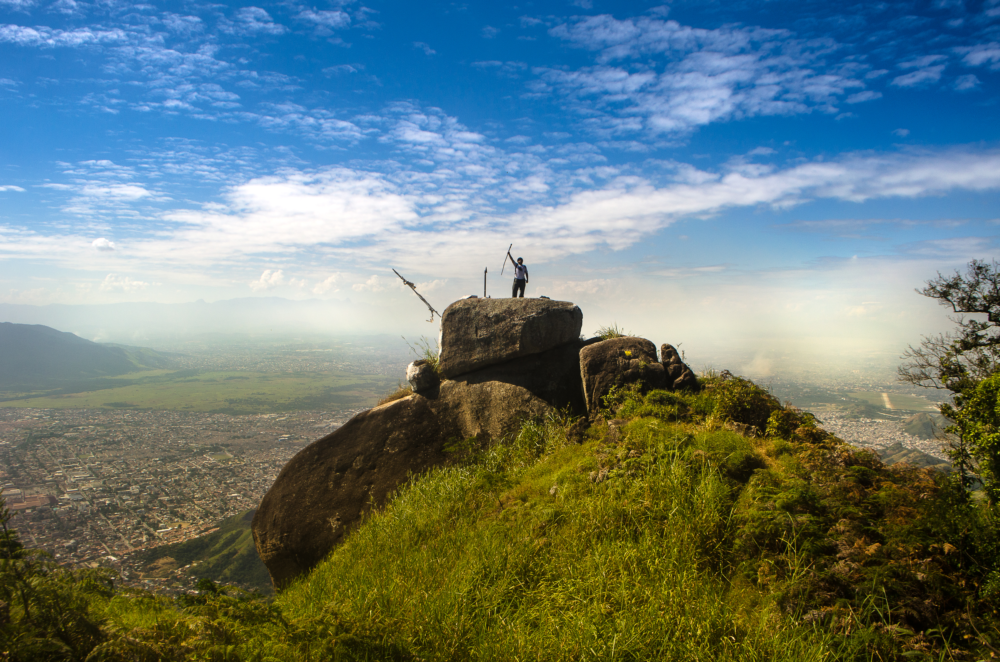
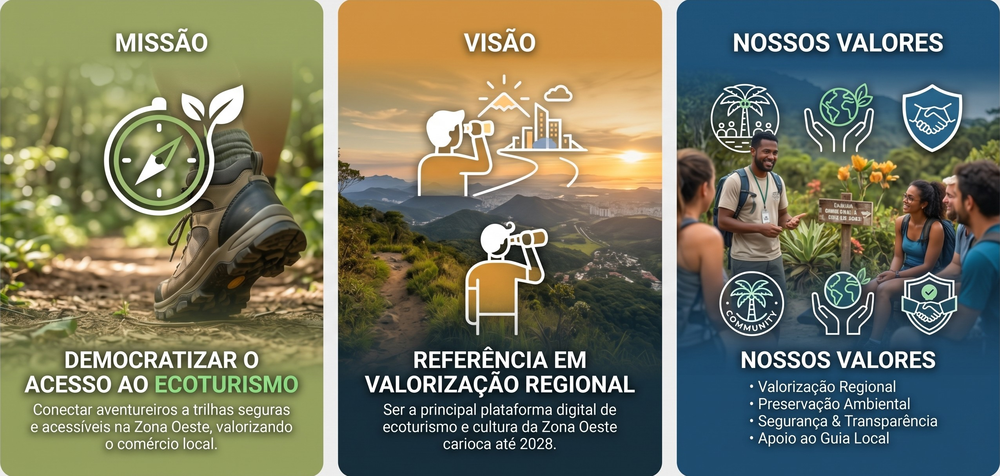

Nossa História

O ExploraZO nasceu nas salas de aula da faculdade, mas a sua raiz está no asfalto e nas trilhas de Campo Grande, Bangu, Guaratiba e adjacências. Percebemos que, enquanto o ecoturismo carioca respira apenas na Zona Sul ou na Tijuca, a Zona Oeste — que abriga tesouros gigantescos como o Parque Estadual da Pedra Branca — é frequentemente esquecida pelos roteiros oficiais e aplicativos tradicionais. Somos um grupo de estudantes inconformados com essa invisibilidade. Decidimos usar a tecnologia para colocar a nossa região no mapa do ecoturismo do Rio de Janeiro, provando que aventura, natureza e cultura também vivem do outro lado da cidade.
Nosso Propósito

- Nossa missão é democratizar o acesso ao ecoturismo na Zona Oeste do Rio, conectando aventureiros a trilhas seguras e valorizando o comércio e os guias locais.
- Nossa visão é ser a principal referência digital de turismo de aventura e valorização cultural da Zona Oeste carioca até 2030.
-
Nossos valores são:
- Valorização regional: Orgulho do nosso território.
- Sustentabilidade: Preservação ambiental em primeiro lugar.
- Segurança e Comunidade: Informação confiável feita por quem vive e conhece a área.
O Que Nos Torna Diferentes?

- Foco exclusivo na Zona Oeste: Não somos mais um app genérico do Rio de Janeiro. Conhecemos cada canto da Zona Oeste e trazemos informações detalhadas sobre trilhas.
- Segurança baseada na realidade: Dados reais sobre dificuldades, pontos de apoio e alertas direto de quem frequenta a região.
- Impacto Local: Ao contrário de grandes plataformas, aqui você encontra e apoia o guia local, a barraquinha de açaí da praça e o restaurante do bairro.
- Passaporte Digital: Carimbe as suas conquistas no aplicativo ao chegar aos cumes e cachoeiras, registrando as suas aventuras e compartilhando seu progresso completando trilhas.
- Gamificação: Fazendo check-in em pontos turísticos você pode ganhar pontos e pode trocar por descontos em restaurantes e guias locais da Zona Oeste.
Entre em contato
Se você é um guia local, comerciante ou simplesmente um entusiasta da Zona Oeste, queremos ouvir você! Entre em contato conosco Entrando em sua conta ou caso ainda não tenha uma, Cadastre-se para compartilhar suas experiências, sugestões ou para se tornar um parceiro do ExploraZO.